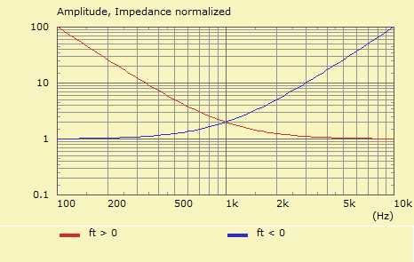

Form - Wall Impedance Object
| Home | General |
 |
 |
 |
Objects of Wall Impedance define boundary-properties, which can be referenced by elements of the Boundary Element Method. For example component Elements has a page called Boundaries. For other boundary conditions than Neumann you would need to select a reference to the Wall Impedance object.
Create a new Wall Impedance-object with the help of the New Component Form. The home of a Wall Impedance is in page General. Edit an existing object by dbl-click its entry in page General or issue menu Edit/Parameters or press CTRL+E.
The specific Wall Impedance of normal incidence can be written as:
Zs = Z0·Zn
with Zs = p/vn is the specific impedance, p is the sound pressure and vn is the normal (particle) velocity at the surface of the element. Z0 = ρc is the plane-wave impedance. Zn is then the normalized specific impedance.
For a rigid surface the normal velocity is zero and the Wall Impedance is infinite. This case is called Neumann boundary conditions.
A fully absorbent surface would have Zs = Z0 as impedance, which is equivalent to the impedance of a free-traveling plane-wave.
If the impedance is purely imaginary then there would be no damping but reaction only.
Assuming mean values for the sound pressure and velocity then
Equivalent mechanic impedance:
Zm = F/v = p/v·S = Zs·S
Equivalent acoustic impedance:
Za = p/q = p/(v·S) = Zs/S
with force F, sound pressure p, velocity v, volume-velocity q and area S.
Way of Specification
For convenience there are several options of specification. Internally all values will be converted to admittance values.
Using Impedance or Admittance values or data-files seem to be yielding more exact results than the specification of Reflection or Damping coefficients. However, the latter provides usually a more convenient way for "adding a little damping" to the system.
Reflection
The Reflection coefficient is similar to the Damping coefficient: R = 1 - D. The range goes from Value = 0 ... 1. A Reflection-value of zero means there is no reflection and the associated impedance would be Z0. A value of one means total reflection and this would be equivalent to Neumann boundary conditions. From R the normalized specific impedance can be calculated:
1 + R
Zn = —————
1 - R
Damping
Damping is similar to the Reflection coefficient: D = 1 - R. The range goes from Value = 0 ... 1. A Damping-value of zero means there are Neumann boundary conditions. With D = 1 we have full absorption and the associated impedance would be Z0. From D the normalized specific impedance calculates:
2 - D
Zn = —————
D
Impedance
With Impedance there can be specified two values. The first indicates the real part and the second the imaginary part of the specific impedance. The latter is optional and defaults to zero if not specified.
If Normalized is checked then the values are assumed to be normalized impedance-values, for example Zn = 1.5, -0.2
If Normalized is not checked then values should be real and imaginary parts of the specific impedance, for example Zs = 617.4, -82.3
Admittance
Similar to the above but the values specify now admittance values according to Y = 1/Z.
If Normalized is checked then the values are assumed to be normalized admittance-values, for example Yn = 0.655, 0.087
If Normalized is not checked then values should be real and imaginary parts of the specific admittance, for example Ys = 0.0016, 0.000212
Normalized
If checked then given values are regarded as being normalized. Normalized impedance values will internally be multiplied by Z0 = ρc. Normalized admittance values will be divided by Z0. Normalized is used for single values as well as for linked data-files. It applies only to Impedance and Admittance values.
Values
Values of Damping, Reflection, Impedance or Admittance, respectively.
If Wall Impedance is linked to a data-file, ie if Reference to data-file is specified, then Value is ignored.
Reflection
Value is a floating point value between 0...1
Value=0 means no reflection, and boundary conditions equivalent to an impedance of a free traveling plane-wave: Zs = ρc.
Value=1 means 100% reflection and Neumann boundary conditions, which is the default in AKABAK.
Damping
Value is a floating point value between 0...1
Value=0 means no damping and Neumann boundary conditions, which is the default in AKABAK.
Value=1 means 100% damping, which are boundary conditions equivalent to an impedance of a free traveling plane-wave: Zs = ρc.
Impedance
Value means an impedance-value. It expects one or two values. The first value is the real-part and the second is the imaginary part of the impedance.
If Normalized is checked then the values are assumed to be normalized to ρc.
If Normalized is not checked then the values are assumed to be a specific impedance Zs = p/v.
Admittance
Value means an admittance-value. An admittance is the inverse of an impedance: Y = 1/Z The specification is similar to Impedance.
If Normalized is checked then the values are assumed to be normalized to 1/ρc.
If Normalized is not checked then the values are assumed to be a specific admittance Ys = v/p.
ft
The parameter ft allows to provide a simple schema for making Value frequency dependent. See graph to the right.
If ft > 0 then damping is applied above ft= according to:
Z(f) = Z·(1 + ft2/f2)
If ft < 0 then damping is applied below ft= according to:
Z(f) = Z·(1 + f2/ft2)
Note, that a 100% reflecting boundary features Z → ∞ (Neumann), and a 100% damping boundary has Zs = ρc, which is equivalent to the impedance of a free-field plane-wave.
If Wall Impedance is linked to a data-file, ie if Reference to data-file is specified, then ft is ignored.
Reference to Data-File
Instead of a constant you can also provide a data-set of frequency dependent values of Damping, Reflection, Impedance or Admittance.
Select a reference to a curve-file-object, which is assumed to also reside in the list on page General.
The reference points to the first curve. This curve is named in edit-field labeled Transfer-Function and has a red background.
Color
Any boundary with a Wall Impedance-object attached is rendered with a marked color. By default this color is green. Here you can alter the color.